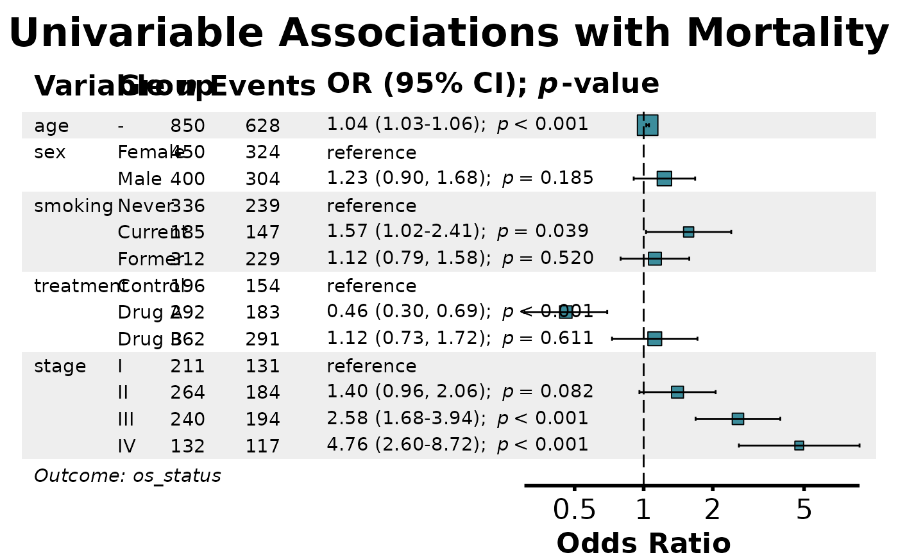
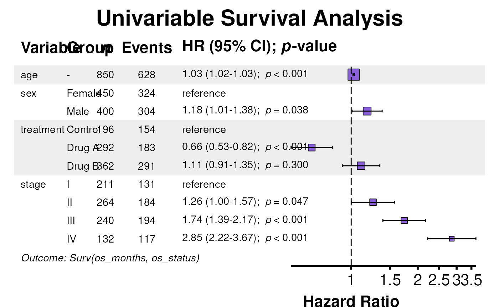
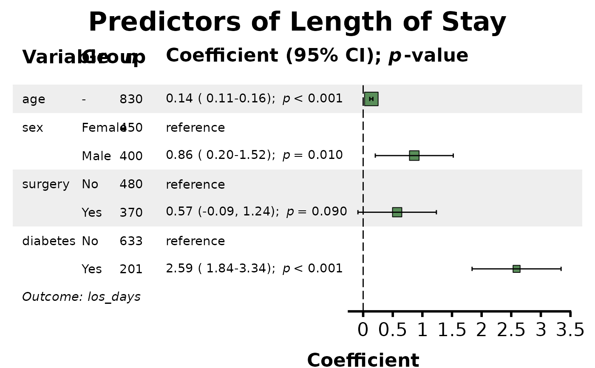
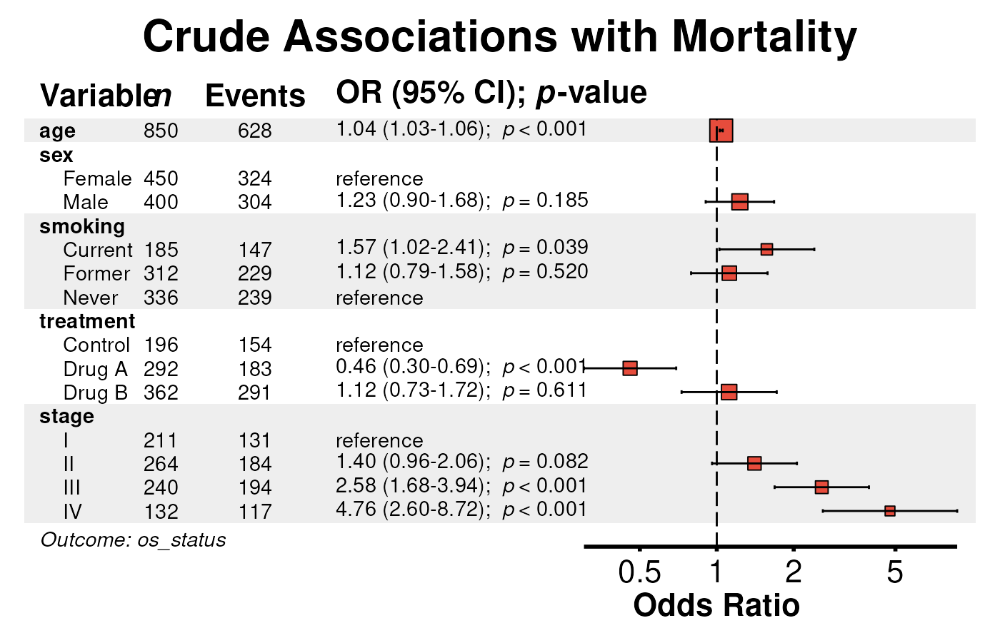
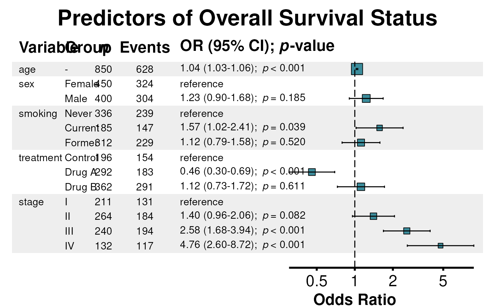

Generates a publication-ready forest plot from a uniscreen output
object. The plot displays effect estimates (OR, HR, RR, or coefficients) with
confidence intervals for each predictor tested in univariable analysis against
a single outcome.
uniforest(
x,
title = "Univariable Screening",
effect_label = NULL,
digits = 2,
p_digits = 3,
conf_level = 0.95,
font_size = 1,
annot_size = 3.88,
header_size = 5.82,
title_size = 23.28,
plot_width = NULL,
plot_height = NULL,
table_width = 0.6,
show_n = TRUE,
show_events = NULL,
indent_groups = FALSE,
bold_variables = FALSE,
center_padding = 4,
zebra_stripes = TRUE,
color = NULL,
null_line = NULL,
log_scale = NULL,
labels = NULL,
show_footer = TRUE,
units = "in"
)A uniscreen result object (data.table with class uniscreen_result
from uniscreen).
Character string specifying the plot title. Default is
"Univariable Screening". Use descriptive titles for publication.
Character string for the effect measure label on the
forest plot axis. Default is NULL, which auto-detects based on
model type (e.g., "Odds Ratio", "Hazard Ratio", "Rate Ratio", "Coefficient").
Integer specifying the number of decimal places for effect estimates and confidence intervals. Default is 2.
Integer specifying the number of decimal places for p-values.
P-values smaller than 10^(-p_digits) are displayed as "< 0.001"
(for p_digits = 3). Default is 3.
Numeric confidence level for confidence intervals. Must be
between 0 and 1. Default is 0.95 (95% confidence intervals). The CI
percentage is automatically displayed in column headers (e.g., "90% CI"
when conf_level = 0.90). Note: This parameter affects display only;
the underlying CIs come from the uniscreen result.
Numeric multiplier controlling the base font size for all text elements. Default is 1.0.
Numeric value controlling the relative font size for data annotations. Default is 3.88.
Numeric value controlling the relative font size for column headers. Default is 5.82.
Numeric value controlling the relative font size for the main plot title. Default is 23.28.
Numeric value specifying the intended output width in
specified units. Used for optimizing layout. Default is NULL
(automatic). Recommended: 10-16 inches.
Numeric value specifying the intended output height in
specified units. Default is NULL (automatic based on number
of rows).
Numeric value between 0 and 1 specifying the proportion of total plot width allocated to the data table. Default is 0.6 (60% table, 40% forest plot).
Logical. If TRUE, includes a column showing sample sizes.
Default is TRUE.
Logical. If TRUE, includes a column showing the
number of events for each row. Default is NULL, which auto-detects
based on model type (TRUE for binomial/survival, FALSE for linear).
Logical. If TRUE, indents factor levels
under their parent variable name, creating a hierarchical display. If
FALSE (default), shows variable and level in separate columns.
Logical. If TRUE, variable names are displayed
in bold. If FALSE (default), variable names are displayed in plain
text.
Numeric value specifying horizontal spacing between table and forest plot. Default is 4.
Logical. If TRUE, applies alternating gray
background shading to different variables for improved readability.
Default is TRUE.
Character string specifying the color for point estimates in
the forest plot. Default is NULL, which auto-selects based on
model type (purple for Cox, teal for GLM, blue for Poisson, green for LM).
Use hex codes or R color names for custom colors.
Numeric value for the reference line position. Default is
NULL, which uses 1 for ratio measures (OR, HR, RR) and 0 for
coefficients.
Logical. If TRUE, uses log scale for the x-axis.
Default is NULL, which auto-detects (TRUE for OR/HR/RR, FALSE for
coefficients).
Named character vector providing custom display labels for
variables. Applied to predictor names in the plot.
Default is NULL (uses original variable names).
Logical. If TRUE, displays a footer with the
outcome variable name. Default is TRUE.
Character string specifying units for plot dimensions:
"in" (inches), "cm", or "mm". Default is "in".
A ggplot object containing the complete forest plot.
The returned object includes an attribute "recommended_dims"
accessible via attr(plot, "recommended_dims"), containing:
Numeric. Recommended plot width in specified units
Numeric. Recommended plot height in specified units
The forest plot displays univariable (unadjusted) associations between each predictor and the outcome. This is useful for:
Visualizing results of initial variable screening
Identifying potential predictors for multivariable modeling
Presenting crude associations alongside adjusted results
Quick visual assessment of effect sizes and significance
The plot automatically handles:
Different effect types (OR, HR, RR, coefficients) with appropriate axis scaling (log vs linear)
Factor variables with multiple levels (grouped under variable name)
Continuous variables (single row per predictor)
Reference categories for categorical variables
uniscreen for generating univariable screening results,
multiforest for multi-outcome forest plots,
coxforest, glmforest, lmforest for
single-model forest plots
# Load example data
data(clintrial)
data(clintrial_labels)
# Example 1: Basic logistic regression screening
uni_results <- uniscreen(
data = clintrial,
outcome = "os_status",
predictors = c("age", "sex", "smoking", "treatment", "stage"),
labels = clintrial_labels,
parallel = FALSE
)
uniforest(uni_results, title = "Univariable Associations with Mortality")
#> Recommended plot dimensions: width = 11.2 in, height = 6.2 in

# Example 2: Survival analysis
library(survival)
surv_results <- uniscreen(
data = clintrial,
outcome = "Surv(os_months, os_status)",
predictors = c("age", "sex", "treatment", "stage"),
model_type = "coxph",
labels = clintrial_labels,
parallel = FALSE
)
uniforest(surv_results, title = "Univariable Survival Analysis")
#> Recommended plot dimensions: width = 11.2 in, height = 5.5 in

# Example 3: Linear regression
lm_results <- uniscreen(
data = clintrial,
outcome = "los_days",
predictors = c("age", "sex", "surgery", "diabetes"),
model_type = "lm",
labels = clintrial_labels,
parallel = FALSE
)
uniforest(lm_results, title = "Predictors of Length of Stay")
#> Recommended plot dimensions: width = 10.0 in, height = 5.0 in

# Example 4: Customize appearance
uniforest(
uni_results,
title = "Crude Associations with Mortality",
color = "#E74C3C",
indent_groups = TRUE,
zebra_stripes = TRUE,
bold_variables = TRUE
)
#> Recommended plot dimensions: width = 10.1 in, height = 7.2 in

# Example 5: Hide footer
uniforest(uni_results,
title = "Predictors of Overall Survival Status",
show_footer = FALSE)
#> Recommended plot dimensions: width = 11.2 in, height = 6.2 in

# Example 6: Save with recommended dimensions
p <- uniforest(uni_results)
#> Recommended plot dimensions: width = 11.2 in, height = 6.2 in
dims <- attr(p, "recommended_dims")
# ggsave("univariable_forest.pdf", p, width = dims$width, height = dims$height)